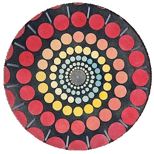
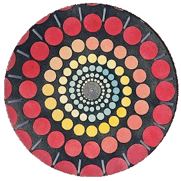
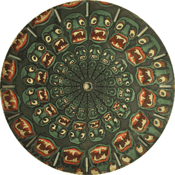
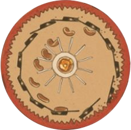
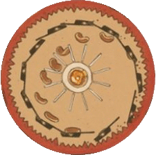

2021-12-22 22:48
Playing with spirals
The phenakistiscope is a rotating disk that produces short animations. It was invented in the 19th century, and the disks from that time are really beautiful. The animations they create are intriguing. In this series we look at a few of the ideas that result in these captivating works of art.
Spirals and more spirals!
In the first article of the series, we saw how a spiral forms a radial movement when animated in a phenakistiscope. Actually, the polar equation of a spiral that starts in the center of the disk looks very similar to that of a line in Cartesian coordinates: \(r = m \theta\). It simply says that the radius changes in proportion to the rotation angle.
So, if we put stuff in such a spiral, it will move along radial lines. Now, if the radius increments slowly for each change in angle, the spiral can last for several complete turns before it reaches the brim of the disk. In the disk below, the spiral completes at least 7 turns of 20 frames each. The visual effect is stunning:
 
The same idea is at work in the next, beautiful disk:
An homage to Joseph Plateau, the inventor of the phenakistiscope
Google produced a set of doodles to celebrate Joseph Plateau and his early animations. I find the disk below very interesting. It combines two movements: The frying pan is moving up and down because its frames are drawn along a circle. But the pancake in the animation seems to move in a parabolic trajectory as dictated by the laws of physics. Note how it does not move in a circle, nor in a spiral! Also, the pancake is not moving from the center, but from the brim of the disk.
About this series
This is the fourth article about the phenakistiscope. In this short series, I describe some of the ideas used to animate the disks. The first article is here.
The next article will discuss a little machine to animate cardboard disks!